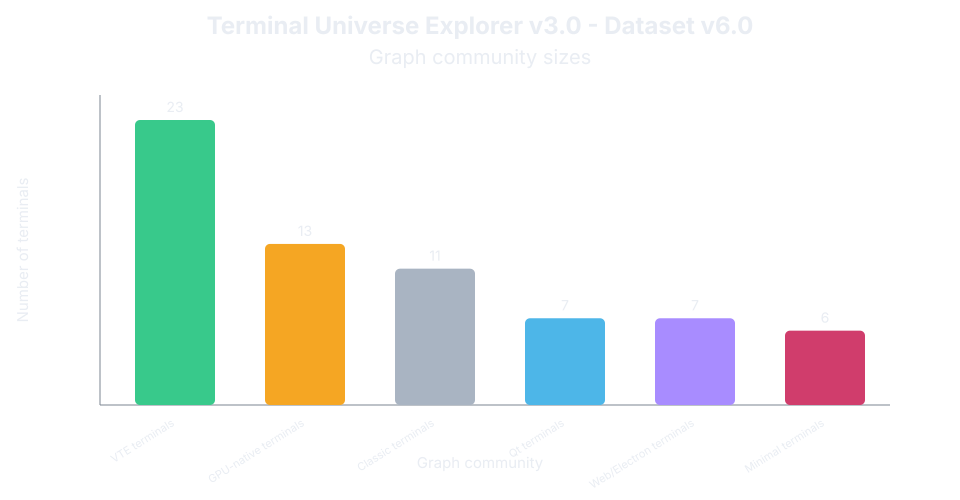

Core dimensions
The graph is organized around rendering model, engine family, and interaction complexity.
An analytical workbench for exploring the structure of the terminal design space.
Return to terminal cards and groups.
What the model compares: the similarity score uses rendering model, engine family, and interaction complexity.
Similarity score: similarity reflects agreement across the structural dimensions used by the model. Higher values mean terminals share more core properties; lower values mean stronger structural differences.
How to read position: terminal placement approximates structural relationships. Distance should be read as a projection of modeled relationships.
What adds context: runtime, semantic/workspace behavior, ecosystem, language, and release year explain terminals and edges, but they do not change the matrix score.
Semantic/workspace: semantic behavior describes whether a terminal acts mainly as a plain terminal surface or adds workflow/document behavior. Workspace behavior describes how sessions, tabs, grouping, or workspace organization reshape terminal usage.
What it does not measure: quality, popularity, performance, beauty, or personal preference.
Unknown years are okay: empty FirstReleaseYear values mean the public release year is not confidently pinned down yet.
• Nearby terminals share structural properties: rendering model, engine architecture, interaction style, semantic behavior, and workspace organization.
• Distant terminals differ in key dimensions: rendering, engine implementation, interaction complexity, semantic layer, and workflow organization.
• Clusters represent common design patterns: classic terminal emulators, GPU-native terminals, widget-reuse systems, workflow-oriented terminals, and web/runtime-based terminals.
• Isolated nodes indicate unusual or boundary designs.
• Connections are relationship projections.
Use the heatmap for the cleanest structural comparison.
Use the projection to inspect clusters, boundaries, outliers, and relation types.
Use gap matrices to see combinations not present under the model.
The graph is organized around rendering model, engine family, and interaction complexity.
Connections link structural neighbors and selected lineage/context pathways under the model.
This is a design-space map, not a ranking. Distance reflects modeled similarity, not quality or popularity.
A quick count of terminals in each visual graph cluster.

67 terminals, curated from source-linked record · 4 rendering models · 4 engine families · 6 semantic/workspace edge cases · 38 active projects.
The compact model: rendering, engine family, and interaction complexity.
Extra layers for modern behavior: semantic output and workspace organization.
These plots summarize the currently modeled dimensions used across Workbench Mode.
{kind=link}
{kind=link}
{kind=link}